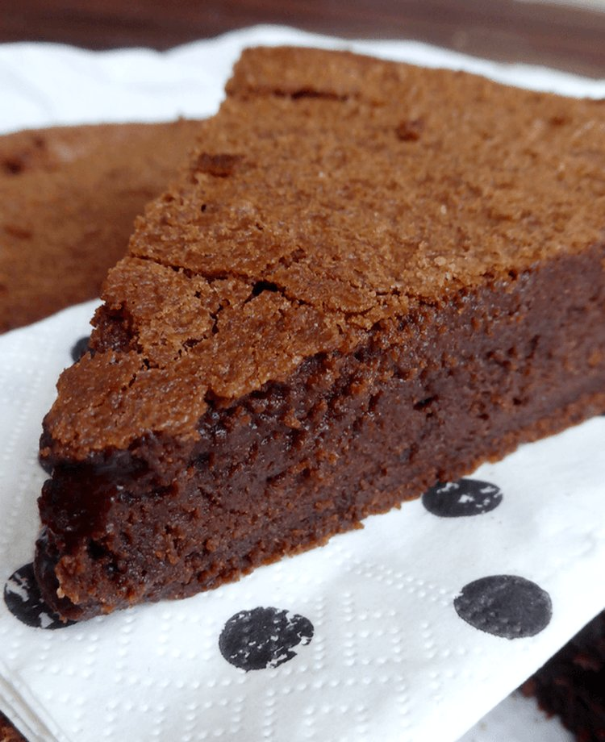

Gâteau au chocolat au Thermomix
Ingredients
×
- 200 g de chocolat noir
- 150 g de beurre salé
- 3 oeufs
- 50 g de farine
- 150 g de sucre

Préparation
Étape 1
Mettre 200 g de chocolat noir en morceaux et 150 g de beurre salé dans le bol. Fondre 5 min/50ºC/vitesse 2.
Étape 2
Ajouter 3 oeufs, 50 g de farine et 150 g de sucre. Mélanger 30 sec/vitesse 6.
Étape 3
Verser dans un moule pas trop grand beurré et fariné. Cuire 30min à 160ºC.